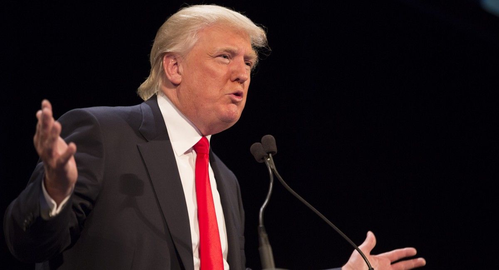

Why do people like Donald Trump/why not?
We approached this question from two sides. First, we wanted to better understand what his stances on several political topics are. Then, we researched not only what states tweeted about, but their opinions on several political issues. Seeing the intersection between these two sides helped us understand the nation's feelings towards Trump.
Below, we have a brief summary of Trump's life and some of his personal opinions on popular political topics. Following that is a break down of the country's tweets and poll data by region. Finally, we take a look at the Twitter data itself.
Bio
Donald John Trump was born on June 14, 1946 in Queens, New York. Trump is known for his real estate development, the television show The Apprentice, his book published in 2000 titled The America We Deserve, and currently is a candidate for the 2016 presidential election. His father, Fred Trump, was a real estate developer as well. He worked for his dad’s company, Elizabeth Trump & Son, while he attended business school at Wharton. Trump was handed down the business in 1971, changing the name to The Trump Organization.
He has made a name for himself in New York City as his real estate development projects began there. One of his first major projects was turning the Commodore Hotel into the Grand Hyatt in 1980. The Trump World Tower, which is 72-stories high and across from the United Nations Headquarters, was completed in 2001. The Trump brand is well-established in many industries and products. Trump products include Trump Restaurants, Trump Golf, Trump Productions, and other merchandise. He became the executive producer and host of NBC’s The Apprentice in 2003. He made over $210 million hosting the show for 14 seasons.
Trump has helped Democratic candidates in the past, such as donating money towards Hillary Clinton, Joe Biden, and John Kerry. However more recently shows support for many Republican candidates. For example, Trump endorsed Mitt Romney and was an early support of Ronald Reagan. despite, his contribution to both Republican and Democratic campaigns. Trump has denounced President Obama’s citizenship, qualifications to get into Harvard Law, and policies.
Trump’s political opinions have fluctuated throughout the years, supporting and rejecting certain political issues in recent years. For example, in 2009, he was a proponent for the government rescue plan for the U.S. auto industry bailout, which was generally a liberal opinion. Trump also believes that vaccines can cause autism, which is often associated with some conservative beliefs. Also, he does not believe in climate-change and has been criticized for being against what the science community supports. He has had a variety of political beliefs ranging from conservative to liberal leanings, even switching his opinion on certain issues. Now during his run for President, he is much more Republican than he has been in the past.